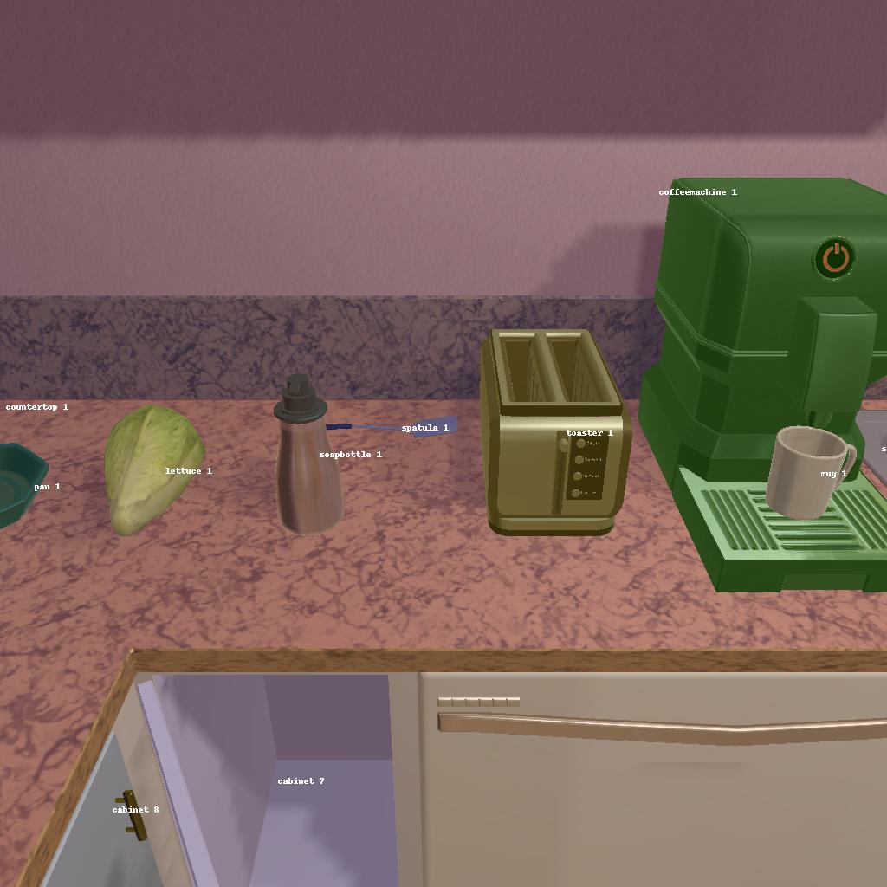
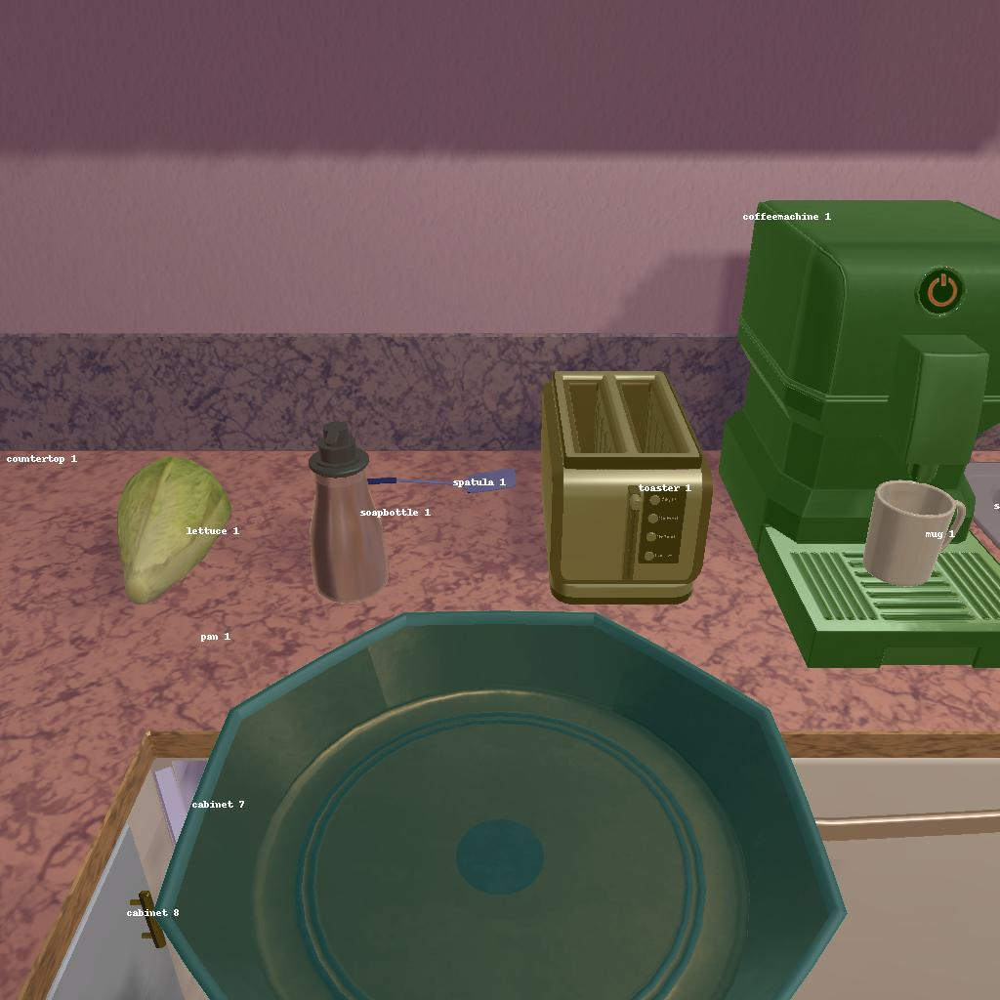

---------------------------------------------------------task: 18---------------------------------------------------------
--------------------------------------------------------------------------------------------------------------------------------------------------------------------
--------------------------------------------------------------------------------------------------------------------------------------------------------------------
Step:--------------------------------------------------------------------------16-------------------------------------------------------------------------------
----------------------------------------
VLM Prompt:
Image1:
Image2:
Image3:
**Instruction**
1. Analyze the provided image to identify all visible household objects, focusing on those relevant to the task description "put a cool pot in cabinet."
2. Use the analysis of the image and the task hint "The agent must find an object of the desired type, pick it up, go to a fridge, cool the object with the fridge, then find the correct location to place it, and put it down there. The agent does not need to use the fridge button or open the fridge to cool the object, and the agent just needs to do action that is "cool the object with the fridge"." to answer the question: what is the most reasonable action in the choices for the task description "put a cool pot in cabinet"?
4. Decide and write the answer using the template: The answer is: (i): , where i is the real number. If there is no desired object in the image, search every place based on **Initial Observation** to find the object. And if no one is exactly correct, choose a similar answer.
**Initial Observation**
You are in the middle of a room. Looking quickly around you, you can see cabinet (1-20), countertop (1-3), coffeemachine (1), toaster (1), sink (1), fridge (1), microwave (1), garbagecan (1), drawer (1-3), sinkbasin (1), stoveburner (1-4), shelf (1-3)
**Answer Choices**
(1): go to cabinet 1
(2): go to cabinet 2
(3): go to cabinet 3
(4): go to cabinet 4
(5): go to cabinet 5
(6): go to cabinet 6
(7): go to coffeemachine 1
(8): go to toaster 1
(9): go to cabinet 8
(10): go to sink 1
(11): go to fridge 1
(12): go to microwave 1
(13): go to garbagecan 1
(14): go to cabinet 9
(15): go to cabinet 10
(16): go to countertop 2
(17): go to cabinet 11
(18): go to cabinet 12
(19): go to drawer 1
(20): go to countertop 3
(21): go to drawer 2
(22): go to cabinet 13
(23): go to sinkbasin 1
(24): go to cabinet 14
(25): go to drawer 3
(26): go to stoveburner 1
(27): go to stoveburner 2
(28): go to stoveburner 3
(29): go to cabinet 15
(30): go to stoveburner 4
(31): go to cabinet 16
(32): go to cabinet 17
(33): go to cabinet 18
(34): go to cabinet 19
(35): go to cabinet 20
(36): go to shelf 1
(37): go to shelf 2
(38): go to shelf 3
(39): open cabinet 7
(40): close cabinet 7
(41): put pan 1 in/on cabinet 7
(42): examine pan 1
(43): examine cabinet 7
**Answer**
Let's think step by step by following the instructions.
----------------------------------------
----------------------------------------
Original Response:
The task description is "put a cool pot in cabinet." According to the task hint, the agent must first find a pot, then cool it with the fridge, and finally put it in a cabinet.
In the image, we can see a pan on the countertop labeled "pan 1." This is the closest object to a pot that is visible in the image. The task does not require the agent to use the fridge button or open the fridge; it just needs to perform an action to cool the object with the fridge.
Based on the Initial Observation, the agent is in the middle of a room with a fridge available. The agent first needs to pick up the pan and then go to the fridge to cool it. However, none of the answer choices provide an option to pick up the pan or cool it with the fridge. The closest action to the task description would be to put the pan in a cabinet, but the pan must be cooled first which is not an available option.
Given that the agent cannot complete the task as described with the answer choices provided, the most reasonable next action would be to examine the pan to ensure it is the correct object to use for the task before proceeding with locating the fridge to cool it. Therefore, the answer is:
The answer is: (42): examine pan 1.
----------------------------------------
----------------------------------------
>>> Refine Original VLM Response and Get Pure Action: examine pan 1
----------------------------------------
-----------------------------------------------------------------
Running time: 11.551389694213867 seconds
Total Money: 11.74497
-----------------------------------------------------------------
-----------------------------------------------------------------
Text Observation:This is a normal pan 1
-----------------------------------------------------------------
UNSUCCEED